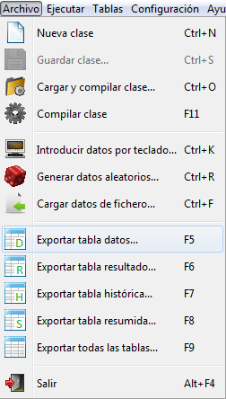
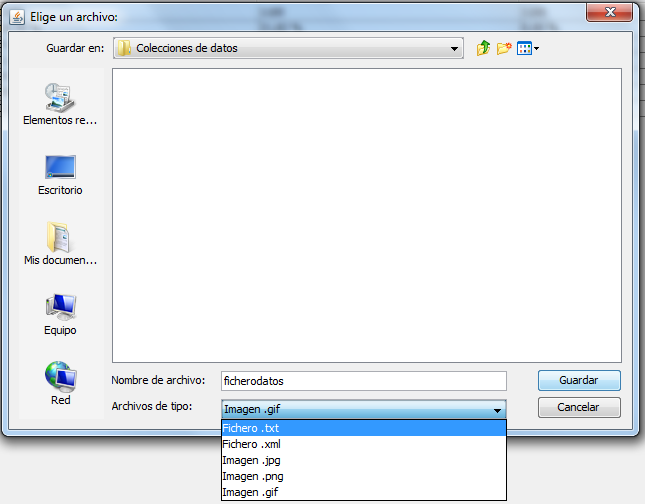
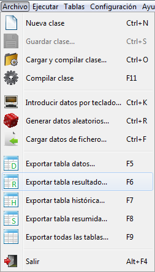
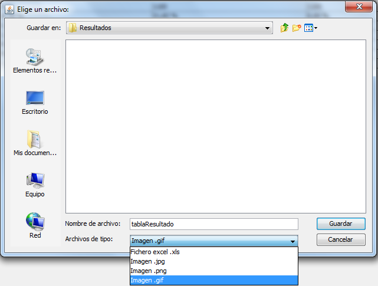
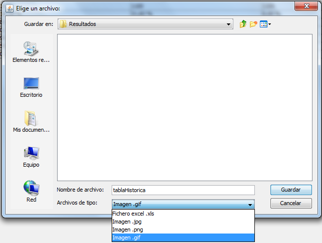
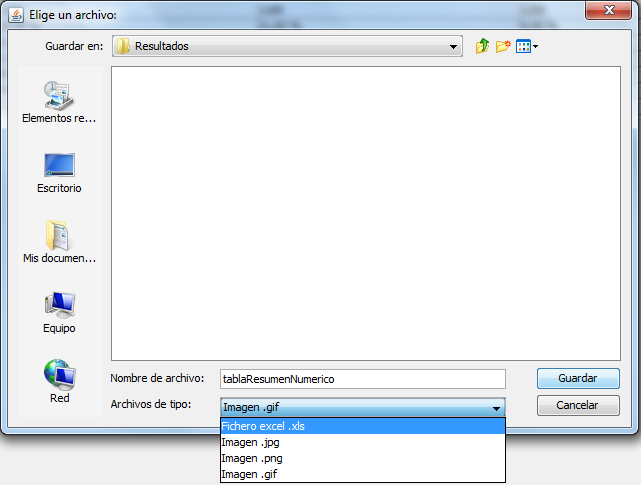
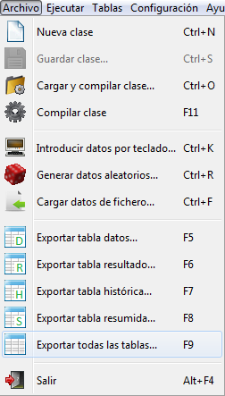
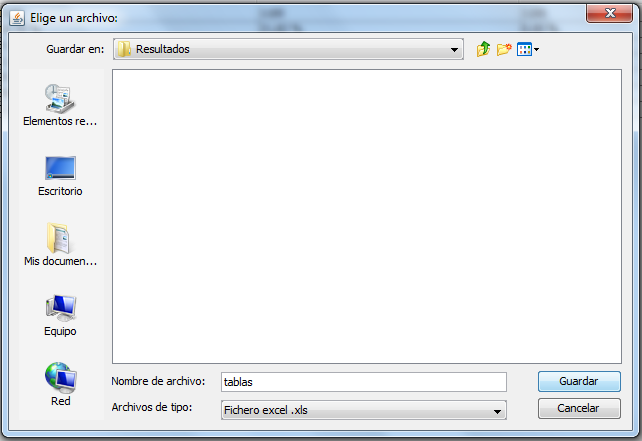

volver
Exportar tablas
Exportar tabla datos
Seleccione desde la barra de menus.

A continuación introduzca el nombre del fichero de datos que desea utilizar y su tipo de archivo entre los disponibles en el desplegable, y pulse el botón "Guardar".

Nota:
Los archivos de datos son ficheros .xml cuyo formato se indica en la sección
Formato ficheros.
Exportar tabla resultado
Seleccione desde la barra de menus,

Introduzca el nombre del fichero en el que desea guardar el resultado de la ejecución y su extensión,

pulse el botón Guardar para finalizar la operación.
Nota:
Los archivos de resultado son ficheros excel cuyo formato se indica en la sección Formato ficheros.
Exportar tabla histórica
Seleccione desde la barra de menus,
Introduzca el nombre del fichero en el que desea guardar el resultado de las ejecuciones y su entensión,

pulse el botón Guardar para finalizar la operación.
Nota:
Los archivos de resultado son ficheros excel cuyo formato se indica en la sección Formato ficheros.
Exportar tabla resumida
Seleccione desde la barra de menus,
Introduzca el nombre del fichero en el que desea guardar los porcentajes de optimidad de los métodos y su extensión,

pulse el botón Guardar para finalizar la operación.
Nota:
Los archivos de resultado son ficheros excel cuyo formato se indica en la sección Formato ficheros.
Exportar todas las tablas
Seleccione desde la barra de menus,

Introduzca el nombre del fichero Excel en el que se guardarán todas las tablas:

pulse el botón Guardar para finalizar la operación.
Nota:
Los archivos de resultado son ficheros excel cuyo formato se indica en la sección Formato ficheros.
16 de Septiembre de 2016